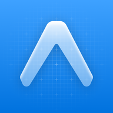

Tickami EnglishPolitique de confidentialité
Dernière mise à jour : 27 septembre 2026
En bref
Tickami range vos factures ; vos données servent uniquement à cela. Pas de publicité, pas de traçage, aucune revente. Hébergement dans l'Union européenne. L'analyse par IA ne se fait qu'avec votre accord.
1. Responsable du traitement
Mok ELFANIDI, éditeur de Tickami, à titre individuel.
Contact : tickami.app@gmail.com
2. Données traitées
• Compte : adresse e-mail, prénom et nom, identifiant du compte Apple, Google ou Microsoft si vous l'utilisez.
• Factures : photos et PDF, fournisseur, numéro, dates, montants, TVA, articles, catégorie, notes.
• Organisation : vos espaces (nom, type, couleur) et le rattachement des factures.
• Réglages : langue, validation automatique, date de votre accord à l'analyse par IA.
• Journal d'analyse : date, modèle d'IA utilisé et volume traité, pour limiter l'usage et suivre les coûts.
3. Données qui restent sur votre iPhone
Recherches récentes, derniers espaces utilisés, une copie de votre profil et de vos espaces (pour ouvrir l'app sans réseau, effacée à la déconnexion) et, en cas de coupure réseau, factures scannées en attente d'envoi. Face ID reste géré par iOS : Tickami ne reçoit jamais vos données biométriques.
4. Pourquoi et sur quelle base
• Fournir le service (compte, stockage, classement, recherche, totaux, export) : exécution des conditions d'utilisation.
• Analyser vos factures par IA : votre consentement, retirable à tout moment dans le Profil. Sans consentement, rien n'est envoyé à l'IA et vous saisissez les informations vous-même.
• Envoyer les e-mails de connexion : exécution des conditions d'utilisation.
• Limiter les abus (60 analyses par heure au plus) : intérêt légitime.
5. Qui reçoit vos données
• Supabase : hébergement du compte, de la base de données et des fichiers, dans l'Union européenne (Irlande).
• Anthropic (API Claude) : analyse des factures, seulement avec votre accord. Anthropic reçoit uniquement les images ou PDF à analyser, sans votre nom ni votre e-mail, et n'utilise pas les données reçues par son API pour entraîner ses modèles.
• Google (Gmail) : envoi des e-mails de connexion.
• Apple, Google, Microsoft : connexion avec leur compte, seulement si vous la choisissez.
Anthropic et Google peuvent traiter des données aux États-Unis. Ces transferts sont encadrés par les garanties prévues par le RGPD (clauses contractuelles types de la Commission européenne).
6. Durée de conservation
• Compte et factures : tant que le compte existe.
• Factures supprimées : 30 jours dans la corbeille, puis effacement définitif automatique.
• Suppression du compte : effacement immédiat et définitif du compte, des factures, des fichiers et du journal d'analyse.
7. Vos droits
Vous pouvez accéder à vos données, les rectifier, les effacer, en obtenir une copie, vous opposer à un traitement ou retirer votre consentement.
Directement dans l'app : modifier une facture, exporter vos factures (Profil → Exporter), retirer l'accord à l'IA, supprimer votre compte. Pour toute autre demande, écrivez à tickami.app@gmail.com : réponse sous un mois. Vous pouvez aussi saisir la CNIL (www.cnil.fr).
8. Sécurité
Échanges chiffrés (HTTPS), fichiers dans un stockage privé, accès aux données réservé à leur propriétaire par des règles en base, liens d'affichage temporaires de 60 minutes, verrouillage Face ID optionnel.
9. Âge minimum
Tickami s'adresse aux personnes de 15 ans et plus.
10. Modifications
En cas de changement important de cette politique, vous serez informé dans l'app avant son entrée en vigueur.